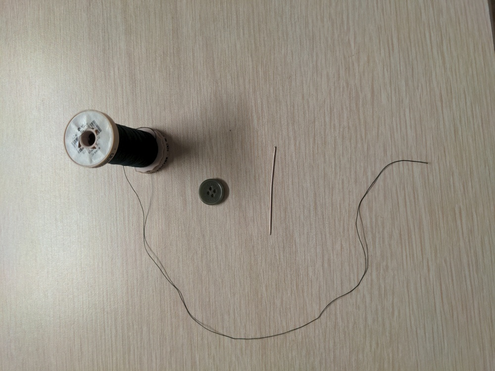
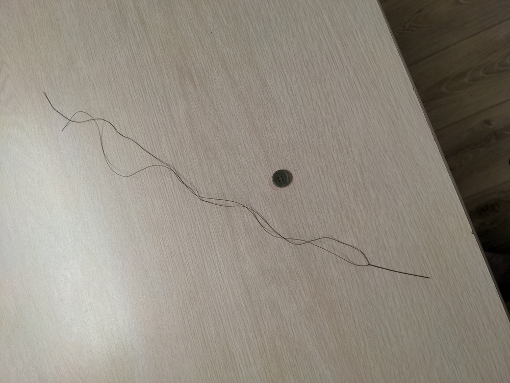
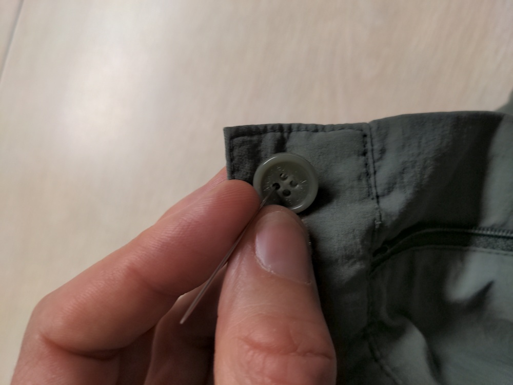
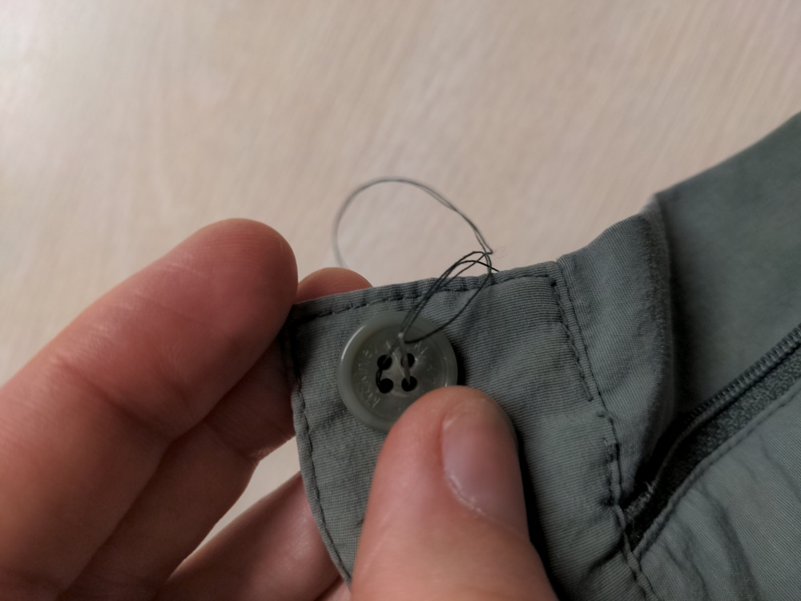
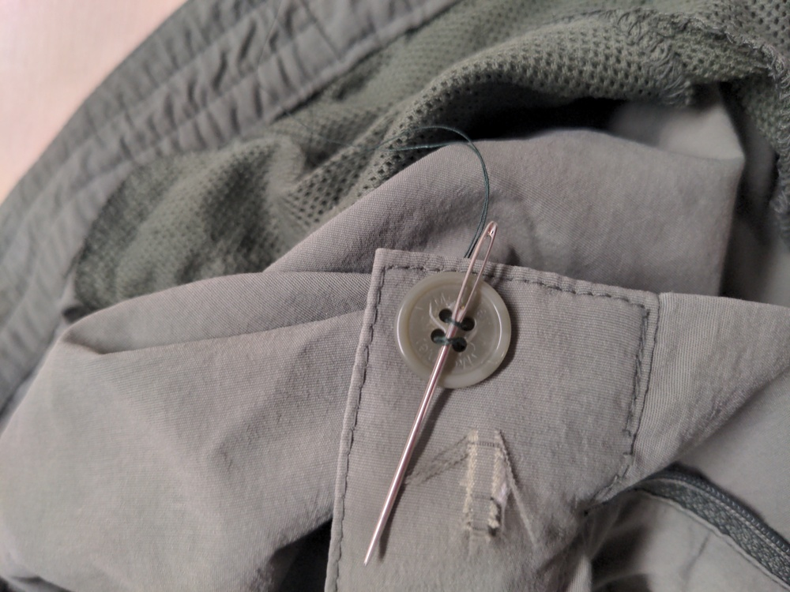
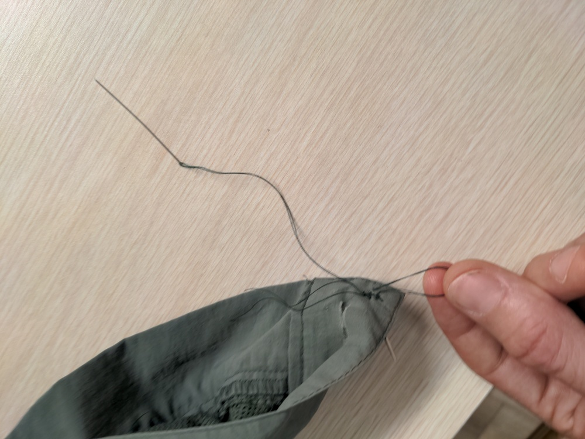
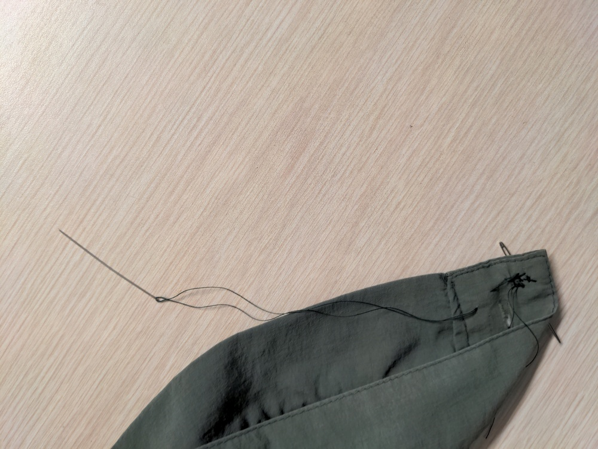
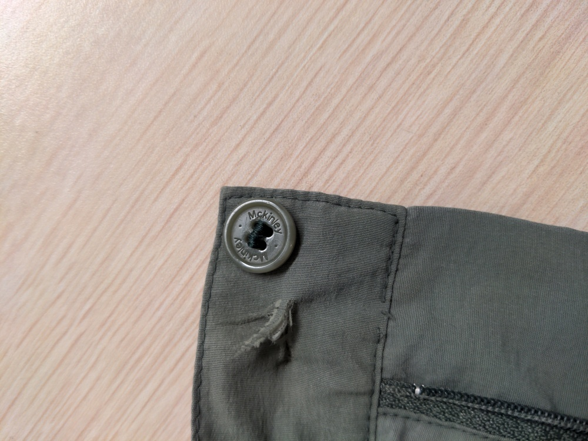

Get a needle and piece of thread that's at least 3 feet long. Use good thread (using old thread that you can easily break will probably make the button come off after a few months.)
Put the thread through the needle, line up the 2 ends to make it half as long, i.e. double it up.

Tie the ends by looping them around your finger and then through the hole. Repeat a few times to try to make a fat knot (a few knots on top of each other).

Put it through the fabric into the button from the side that's not visible.
Go through each hole in the button, remembering the order you’re going through.
Stick a needle or nail or something on top of the button under the loops, for a “spacer”. The purpose of this is so, when it’s finished, the thread won’t be holding the button tight against the pants, which would increase the tension and make the button break again soon.
Keep looping around the holes in the button, following the same order, about 5 times, but don't use up all the thread, you'll still need extra to do the below steps.
End at the side that's not visible.
Put it through the fabric, under a few threads, but don't go all the way through - leave a hole. The spot you go through the fabric has to be quite close to the button. (Note: the place where the needle comes out should be closer to the hole than in this picture.)
Go through the hole, then repeat twice to make a triple hole.
Pull it to make a knot right next to the fabric.
"Bury the thread" under the fabric by putting the needle through and under the fabric and out the other side.
Cut the thread. The end of it should now be invisible under the fabric, and the knot should be partially hidden under the fabric.
